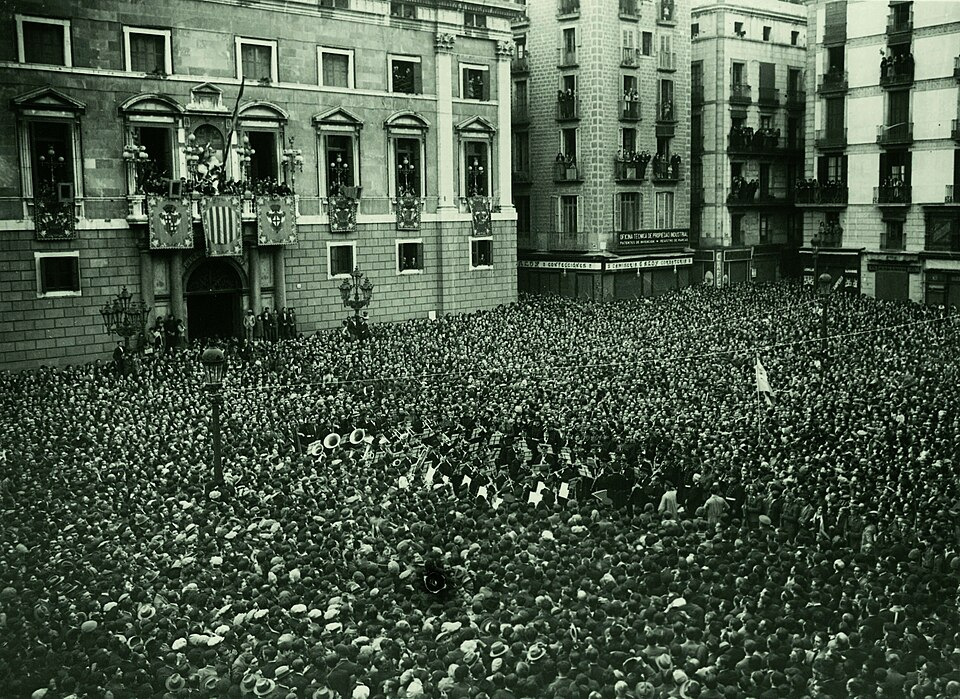

Alfonso XIII sale de España y se proclama la República
Dos días después de las elecciones municipales, el rey ha suspendido el ejercicio del poder real y ha salido esta noche de Madrid. El comité revolucionario se ha constituido en Gobierno provisional y la República ha sido proclamada en la Puerta del Sol.

Madrid ha vivido una jornada que pasará a los anales. Desde primera hora corrieron las noticias de que la bandera tricolor había sido izada en Éibar y en otras ciudades, y a lo largo del día fue apareciendo en balcones, tranvías y automóviles de la capital. Por la tarde, una muchedumbre creciente llenó la Puerta del Sol frente al Ministerio de la Gobernación. Al caer la noche, don Niceto Alcalá-Zamora proclamó la República desde el ministerio, entre aclamaciones, y el comité revolucionario quedó constituido en Gobierno provisional. No se registran en Madrid, a la hora de cerrar esta edición, choques de sangre.
El desenlace se precipitó tras las elecciones municipales del domingo, en las que las candidaturas republicanas y socialistas obtuvieron la mayoría en casi todas las capitales de provincia, aunque en el conjunto de los pueblos el número de concejales fuera de otro signo. En palacio y en el Gobierno se sucedieron desde el lunes las consultas, y el almirante Aznar declaró a los periodistas que el país se había acostado monárquico y despertado republicano, frase que ha corrido de boca en boca. Hoy, tras conferenciar el conde de Romanones con el señor Alcalá-Zamora, se convino la transmisión pacífica del poder y la salida del rey.
Don Alfonso XIII ha dirigido al país un manifiesto en el que afirma: «Las elecciones celebradas el domingo me revelan claramente que no tengo hoy el amor de mi pueblo». Declara que suspende deliberadamente el ejercicio del poder real y que se aparta de España para evitar una guerra entre españoles, aunque sin renunciar a derechos que considera depósito de la historia. Esta misma noche ha salido en automóvil hacia Cartagena, donde embarcará; la reina y sus hijos dejarán Madrid mañana. Termina así, sin abdicación formal, un reinado de casi medio siglo contando la regencia, y con él la monarquía restaurada en 1874.
La fisonomía de la calle contaba la jornada mejor que los partes oficiales. En las plazas se cantaba, se vitoreaba a la República y los desconocidos se abrazaban; grupos de jóvenes pasearon banderas tricolores sin que la fuerza pública interviniera. Pero no todo Madrid estaba en la calle: muchos comercios cerraron temprano, en no pocas casas se siguieron los sucesos tras los visillos y en los círculos monárquicos la tristeza era visible. El nuevo Gobierno, presidido por el señor Alcalá-Zamora, ha dirigido al país sus primeras palabras pidiendo orden y anunciando que someterá su obra a unas Cortes constituyentes.
Quede el registro escueto, que la jornada no necesita adornos: en un solo día, y sin sangre en las calles de la capital, España ha cambiado de régimen. El hecho admite lecturas encontradas, y este diario, que las oye todas, no ha de anticipar ninguna: unos ven abrirse una era de renovación; otros temen lo que pueda traer tanto cambio junto. La República nace entre el júbilo de las plazas y la incertidumbre de quienes callan, con unas Cortes constituyentes por convocar y un país entero por gobernar. Lo que se haga con esta hora, solo el porvenir puede decirlo; nosotros dejamos escrito el día.